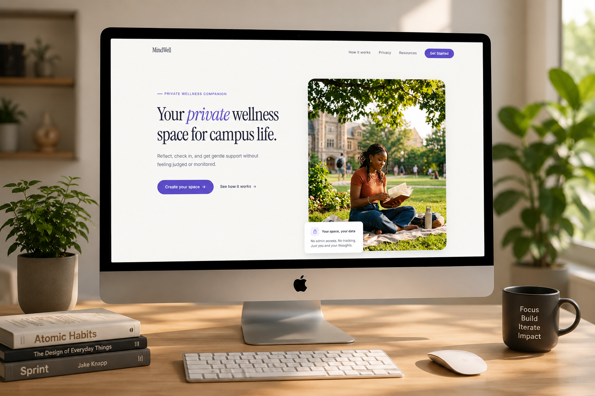
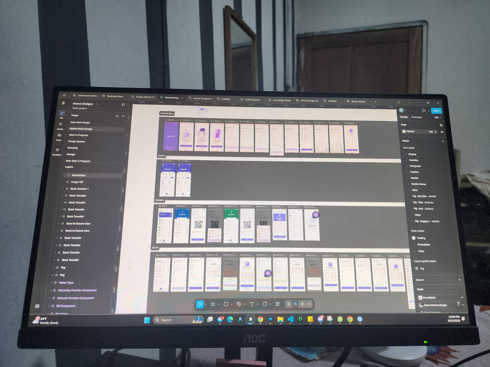

I was around six or seven when I first used a computer. Back then it was games and movies. The things a child does with a screen.
At 16, that changed. I started graphic design and printing, and by 17 I was fascinated by what I could make. I could take something that existed only in my head and turn it into something another person could see.

Branding in 2020. Product Design in 2022. And I've kept exploring ever since, right up to AI-assisted building.

Early exposure to technology changed what I believed was possible for me.
My background in education came before Product Design.
I studied Education Mathematics, the path to becoming an educator. It taught me how to relate to students and think about learning from the side of the person trying to understand something. Later I moved into Computer Science, but Product Design was already part of my journey by then.

Education taught me about learning. Product Design taught me about people. Technology gave me the tools to build.
Those three worlds became a big part of who I am.

.jpg)
Teaching became one of the things I genuinely enjoy.
At TechCrush I've taught and mentored thousands of aspiring Product Designers, and tutored others on my own. More recently I taught children around seven and eight basic UI/UX and coding, including HTML and web development.

My favourite part is watching a student pull an idea forward. Tap the document:

Students have come back after their programs to tell me how it changed their lives. Those moments stay with me.
Education isn't just transferring information. It's expanding what someone believes they can do.


I started exploring AI seriously around 2024, and by 2025 it was deep in how I work.
The first time I used AI to build a website, I was genuinely shocked by what was possible.
It changed how I approach ideas. I could explore, learn, prototype, build, and test faster.
AI became a multiplier for me. Not a replacement for thinking.
▚ the archive turns from paper into screens here ▚
But I've seen the other side too. Students using AI to cheat, to avoid learning, to treat it as a shortcut instead of a tool for thinking. That made me ask a different question:
What happens when children are taught to use AI to create, instead of simply using it to get answers?
That question is one of the reasons imagi caught my attention.
I discovered imagi while researching startups building interesting things. I went down a rabbit hole.
I watched your videos and researched the company and the founders. I found Dora. I found Beatrice. And the more I learned, the more I wanted to understand what you were building.

AI should expand what children can create, not replace the process of learning.
I'm drawn to a team that's deeply serious about the problem while keeping creativity and enjoyment in how they build. I know what technology did for me early, and what AI does for me now. I want more people to experience technology as something they create with, not just consume.
imagilabs.com/about-us ▸
My experience has given me a combination that feels deeply relevant to what imagi is building. Tap a word:
Each part of my background points at the same problem imagi is solving.
I've designed fintech, SaaS, AI and Web3 products, and used Claude Code to turn designs into working ones. I've studied Education Mathematics and Computer Science. I've taught thousands of people, taught children, and designed products for students.
I've experienced technology as a student, an educator, a designer, and a builder.
MindWell brought many of those worlds together.
I assumed I knew what students would want from an AI mental-health product.
I spoke with students and tested the product. Some of my assumptions were wrong.
I simplified the core journeys and changed the AI interaction.
I iterated the prompts and AI behaviour, building it with AI-assisted development, including Claude Code.
I watched real users and fixed issues based on what I saw.


DESIGN
- Figma
- Research
- Flows
- Systems
- Prototypes
BUILD
- Claude Code
- React
- HTML / CSS
- AI-assisted dev
- Working products

And one more thing I'd bring: I figure things out. I don't always know the answer when I start, and I'm comfortable learning, experimenting, and improving until I find a way forward.
Because this connects almost every chapter of my life.
The child introduced to computers early. The teenager who found technology could be a creative tool. The designer, the education student, the tutor who's watched students discover what they're capable of, the builder who found what AI can unlock. And the person who has seen both sides of AI: how it accelerates learning, and how it becomes a shortcut when no one teaches you to use it properly.
Children deserve more than access to technology.
They deserve to understand it. Question it. Create with it. And eventually, shape it.
That's what excites me about imagi. Technology changed the trajectory of my life, and I'd love to help give another child that same chance.
that's why I want to build with imagi.